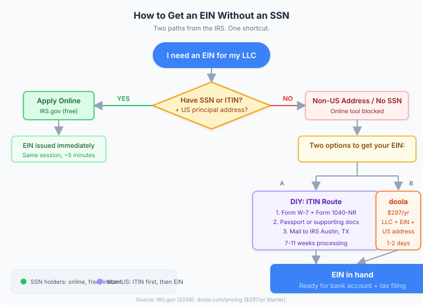

How to Get an EIN Without an SSN (Non-US Founder Guide)
Last updated: 2026-08-17
TL;DR: Yes, you can get an EIN without an SSN. If you are a non-US founder without a Social Security number, the IRS lets you apply for an EIN using an Individual Taxpayer Identification Number (ITIN) instead. The catch: you need the ITIN first, and getting one takes 7-11 weeks by mail. If you want to skip the paperwork, doola's $297/yr Starter plan handles the entire process -- LLC formation, EIN, and a US business address -- in 1-2 business days.

Who actually needs this guide
You are reading this because you form or own a US LLC or corporation but you do not have a Social Security number. That usually means you are a non-US citizen or permanent resident founding a US business from abroad, or you are on a visa that does not qualify you for an SSN.
An EIN is a federal tax ID number. You need one to open a US business bank account, hire employees, and file federal taxes. The IRS online EIN tool accepts an SSN or an ITIN -- but only if your principal place of business is in the US. If it is not, the online tool blocks you, and you must apply by phone, fax, or mail.
SSN vs ITIN: what is the difference
Both are nine-digit IRS numbers. The SSN is for US citizens and permanent residents; the ITIN is for people who need a US taxpayer ID but do not qualify for an SSN. For EIN applications, the IRS treats them interchangeably -- the online tool says you need "the Social Security number or taxpayer ID number of the responsible party." Either works.
Source: IRS -- Get an Employer Identification Number
The DIY path: get an ITIN, then apply for an EIN
This is the full manual route. It costs nothing in fees (just the cost of mailing documents), but it takes time.
Step 1: Form your LLC with the state first
The IRS requires your entity to exist before you apply for an EIN. Register your LLC with your state's Secretary of State before touching the IRS application. If you form in Wyoming, Delaware, or another no-residency state, you can do this entirely online. The filing fee varies by state (Wyoming is $100, Delaware is $90).
Step 2: Apply for an ITIN
You need three things:
- Form W-7 -- the ITIN application. Download from IRS.gov.
- Form 1040-NR -- a US nonresident alien income tax return (required even if you owe no tax).
- Proof of identity -- a valid passport satisfies both identity and foreign status requirements on its own.
Mail the complete package to:
Internal Revenue Service
Austin Service Center
ITIN Operation
P.O. Box 149342
Austin, TX 78714-9342
Or use a private delivery service to:
Internal Revenue Service
ITIN Operation
Mail Stop 6090-AUSC
3651 S. Interregional, Highway 35
Austin, TX 78741-0000
Processing takes 7 weeks under normal conditions, or 9-11 weeks during tax season (January 15 to April 30) or for overseas applicants. You will receive a CP565 notice when your ITIN is assigned.
If you are in the US, you can apply in person at an IRS Taxpayer Assistance Center or through a Certifying Acceptance Agent to avoid mailing your passport.
Source: IRS -- How to Apply for an ITIN
Step 3: Apply for an EIN with your ITIN
Once you have the ITIN, you can apply for an EIN. Here is where your location matters:
- US-based: Use the IRS online EIN tool. Takes about 5 minutes, EIN issued immediately.
- Outside the US: Apply by phone at 267-941-1099 (Mon-Fri, 6 a.m. to 11 p.m. ET), by fax to 855-215-1627 (US) or 304-707-9471 (outside US), or by mail with Form SS-4. Phone/fax take ~4 business days; mail takes ~4 weeks.
You can only apply for 1 EIN per responsible party per day.
Source: IRS -- Employer Identification Number
Total timeline (DIY route)
Add it up: 2-4 weeks to form the LLC, 7-11 weeks for the ITIN, then 1-4 weeks for the EIN. Realistically, 10-17 weeks from start to EIN in hand -- 2.5 to 4 months without a bank account.
The faster route: let doola handle it
If you do not want to wait months, doola's Starter plan ($297/yr) bundles LLC formation, EIN application, and a US business address. They work specifically with non-US founders -- no SSN or US presence required.
You provide your company name, personal address, and contact info. doola files the LLC and handles the EIN. A passport is needed later for the bank account (they partner with Mercury), but the EIN itself does not require one.
The LLC forms in 1-2 business days. The EIN follows shortly after. The $297 also covers registered agent service and compliance filings for the first year.
When to pick doola: You want to start selling or contracting under a US LLC within days, not months.
Common mistakes that delay your EIN
- Applying for the EIN before forming the LLC. The IRS expects your entity to exist at the state level first. Submitting before registration causes delays or rejection.
- Using the online tool with a foreign address. If your principal place of business is outside the US, the online tool rejects you. You must use phone, fax, or mail.
- Forgetting the responsible party requirement. Every EIN application names a "responsible party" -- the person who controls the entity. That person must provide their SSN or ITIN. If neither founder has one, you need the ITIN first.
- Not filing Form 1040-NR with the W-7. The ITIN application generally requires a federal tax return to be attached. There are exceptions, but skipping the return without qualifying for an exception results in a CP566 notice requesting more information.
- Mixing up ITIN and SSN on the EIN application. They are different numbers from different agencies. An ITIN starts with 9. Make sure you enter the correct type on Form SS-4 or the online tool.
- Applying for multiple EINs. The IRS limits you to 1 EIN per responsible party per day. If you need EINs for multiple entities, you must spread them across days.
You can use the EIN immediately for bank accounts, business licenses, and paper tax returns. E-filing and electronic tax deposits take up to 2 weeks to activate. Keep your CP575 confirmation letter safe -- if lost, request Letter 147C by calling 800-829-4933.
Recap checklist
- Determine if you have an SSN or ITIN. If yes and your business is US-based, apply online -- it is free and takes minutes.
- If you have no SSN and are outside the US, decide: DIY (form LLC, apply for ITIN via Form W-7 + 1040-NR, wait 7-11 weeks, then apply for EIN) or use doola ($297/yr) to bundle LLC + EIN + US address in 1-2 days.
- Form your LLC with the state before applying for the EIN.
- For non-US applicants using the IRS directly: apply by phone (267-941-1099), fax, or mail with Form SS-4.
- Save your CP575 confirmation letter and request Letter 147C if you lose it.
FAQ
Can I get an EIN online without an SSN?
Yes, but only if you have an ITIN and your principal place of business is in the US. The IRS online EIN tool accepts "the Social Security number or taxpayer ID number of the responsible party." If your business address is outside the US, the online tool blocks you regardless of whether you have an SSN or ITIN -- you must apply by phone, fax, or mail.
How long does it take to get an ITIN?
Processing takes 7 weeks under normal conditions, or 9-11 weeks during tax season (January 15 to April 30) or if you apply from outside the US. Apply in person at an IRS Taxpayer Assistance Center or through a Certifying Acceptance Agent to potentially speed up document authentication, though processing time at the IRS remains the same.
Do I need to form an LLC before applying for an EIN?
Yes. The IRS states: "If you are creating a corporation or LLC, form your entity through the secretary of state before you apply for an EIN." If you do not, your EIN application may be delayed.
What is the difference between an EIN and an ITIN?
An EIN is a business tax ID number. An ITIN is an individual tax ID number for people who cannot get an SSN. You need an ITIN first (as a non-US founder without an SSN), then use that ITIN to apply for your business's EIN. They serve different purposes in the tax system.
Can doola get me an EIN if I am not in the US?
Yes. doola works with non-US founders specifically. Their Starter plan ($297/yr) includes LLC formation, EIN application, and a US business address. You provide your company name, address, and contact info. A passport is needed later for the bank account, but not for the EIN application itself. See doola.com/pricing for current plan details.
Is there a fee to apply for an EIN?
No. The IRS charges nothing for an EIN. Beware of third-party websites that charge for EIN applications -- you never have to pay a fee. That said, services like doola charge for the convenience of handling formation, EIN, and compliance together, not just the EIN itself.